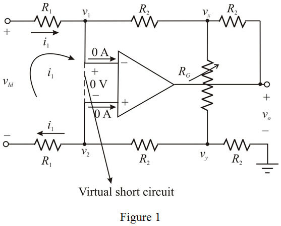
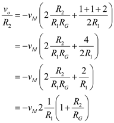

Apply Kirchhoff’s voltage law to left side mesh in the circuit.
Therefore, the current through the resistance,  is,
is,
Apply Kirchhoff’s current law at node,  .
.
Substitute the expression for the current,  in the equation.
in the equation.
Refer to Figure P6.70 in the textbook for a modified version of a differential amplifier.
The inverting and non-inverting terminal currents are zero in an ideal op-amp, and due to virtual short circuit the inverting and non-inverting node voltages are equal.
Draw the circuit with the node voltages and currents.

Apply Kirchhoff’s voltage law to left side mesh in the circuit.
Therefore, the current through the resistance, is,
Apply Kirchhoff’s current law at node, .
Substitute the expression for the current, in the equation.
Apply Kirchhoff’s current law at node,  .
.
Substitute the expression for the current,  in the equation.
in the equation.
According to virtual ground concept, the inverting node voltage is equal to the non-inverting node voltage.
Apply Kirchhoff’s current law at node,  .
.
Substitute the expression for  in the equation.
in the equation.

Simplify the expression further to get an expression for the differential gain,  .
.
Therefore, the differential voltage gain,  is, .
is, .